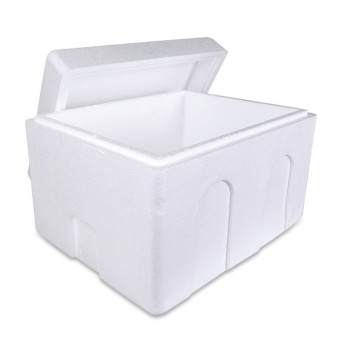

|

|
🌿스티로폼, 어떻게 배출하면 좋을까요?
- 용기 안의 내용물, 이물질은 깨끗하게 비워주세요.
- 다 먹은 컵라면 용기 속 음식물 찌꺼기를 모두 제거하고
물에 한 번 행궈서 버리면 재활용이 쉬워집니다.
깨끗하게 씻은 스티로폼 용기를 햇볕에 잘 말리면 착색된 붉은 양념이 사라져요!
- 용기 밖의 부착상표 등 다른 재질인 부분을 모두 제거해주세요.
- 라벨이나 뚜껑 등 재질별로 분리하여 배출하면 재활용이 쉬워집니다.
- TV 등 전자제품 구입 시 완충재로 사용되는 발포합성수지 포장재는 가급적 구입처로 반납해 주세요.
|